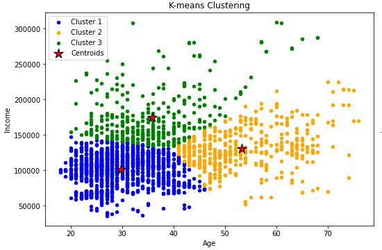
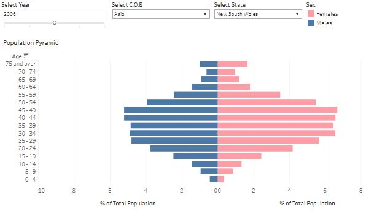

Small Steps | Titanic
For my first project, I completed the Kaggle Titanic competition, using Titanic passenger data to try to predict who will survive and who will die.
This project was completed in Python and serves as a demonstration of my understanding of classification machine learning.

Customer Segmentation
I perform customer segmentation analysis on a dataset of 2000 customers and presented my findings in a report.
This project was completed in Python and serves as a demonstration of my understanding of unsupervised machine learning through clustering.

Airbnb Prices in Sydney
I predicted listed property prices of Airbnb stays in Sydney based on data of various Airbnb characteristics.
This project was completed in Python and serves as a demonstration of my understanding of regression machine learning.

Migrant Demographics
I created a dashboard to explore the demographics of the Australian population born overseas over the last 20 years.
This project was completed in Tableau and serves as a demonstration of my understanding of data visualisation.